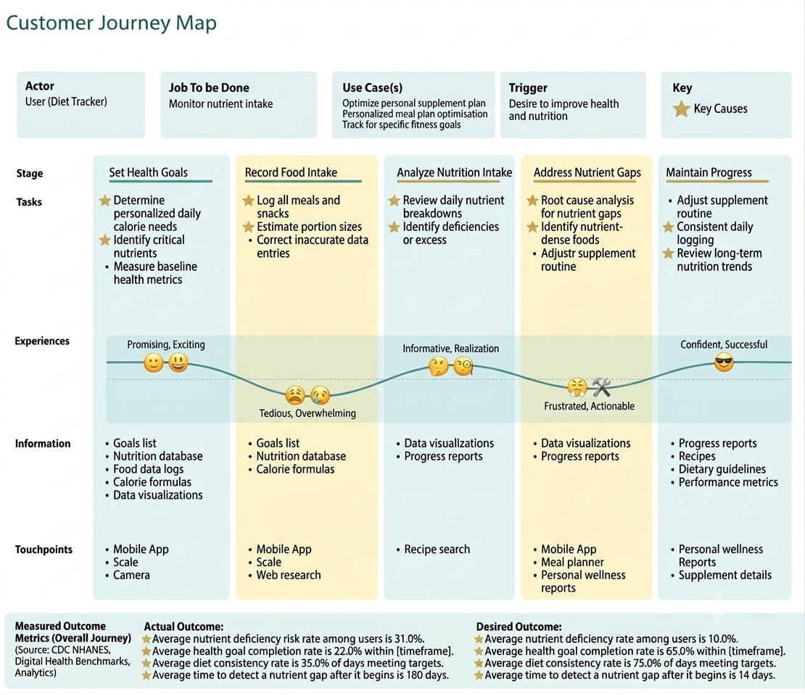

Preventers
Age 45–59, highest stakes from an undetected gap.
Product Management Essentials / work in progress
U.S. adults who already track their food still wait, on average, 180 days to learn they are short on a micronutrient. The desired outcome is 14. This brief is the problem and market work from Heinz. The product idea itself is due at the end of the course, so the solution and value spaces are still blank on purpose.

1. Customer problem space
Actor: diet tracker. Job to be done: monitor nutrient intake. Today the average nutrient-deficiency risk rate among users is 31%. The target is 10%. Health-goal completion sits at 22% against a desired 65%. Diet consistency is 35% of days meeting targets, against 75%. And the average time to detect a nutrient gap after it begins is 180 days, aligned with a bi-annual checkup, against a desired 14.
Why the gap holds
Apps report grams and %DV without translating a shortfall into a cause or a food to fix it.
Shortfalls build over weeks. Nothing surfaces the trend until the user digs into breakdowns.
The 180-day lag is the healthcare cadence, not the app. Portion estimates also skew the log.
Problem statement
U.S. adults who track nutrition want to catch a deficiency within about 14 days of it starting. They currently face an average detection time of 180 days. That puts an estimated 31% of roughly 55 million actors at risk each year, about 11.5 million people, and leaves around 2.75 billion excess undetected-risk days on the table annually.
2. Market space
Same actor set: about 55 million U.S. adults. The calorie and nutrition-tracking market has grown at roughly 13–15% CAGR since 2018. TAM is deferred until the last assignment. Early profiles in the workbook: chronic-condition preventers (~11M), performance optimizers (~8M), and casual wellness trackers (~19M).
Age 45–59, highest stakes from an undetected gap.
18–29, wearable-integrated, likely early premium payers.
30–44, largest segment, intermittent loggers.
Not started. Due with the last assignment.
Competition and maps are still empty.
Still in the workbook
The course asks for the idea brief at the end. MVP outline, user views, requirements, features, pricing, and the value proposition are listed and blank. I will fill them as the assignments land rather than invent a finished product here.